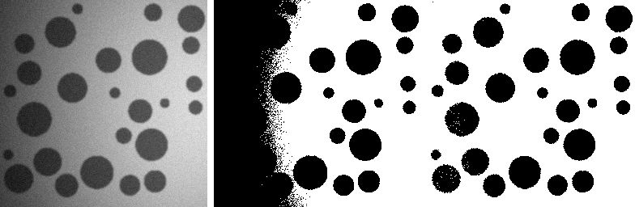
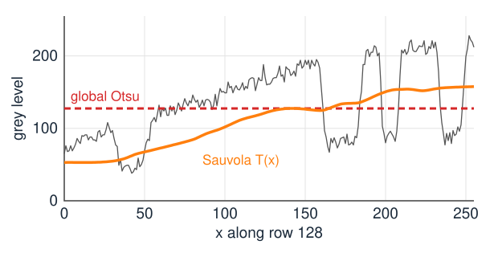
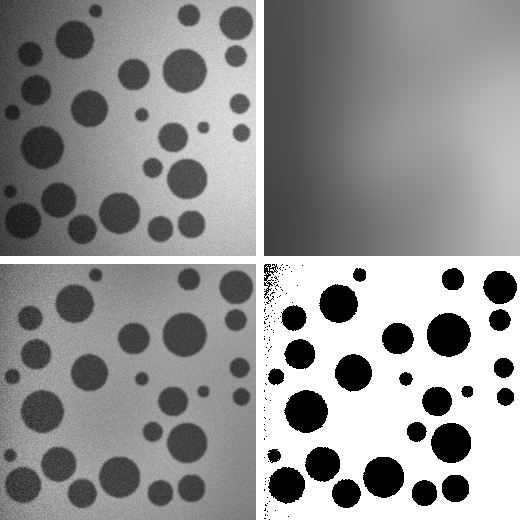
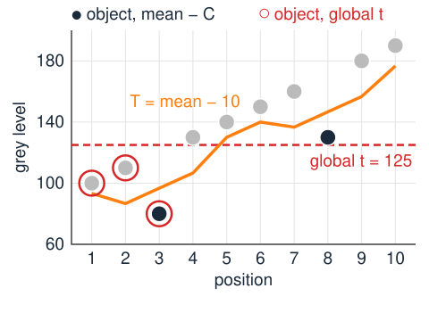
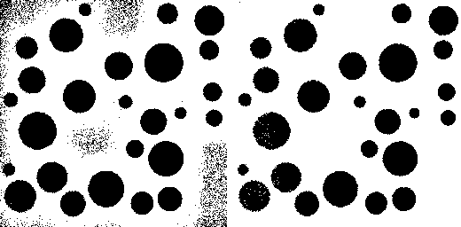
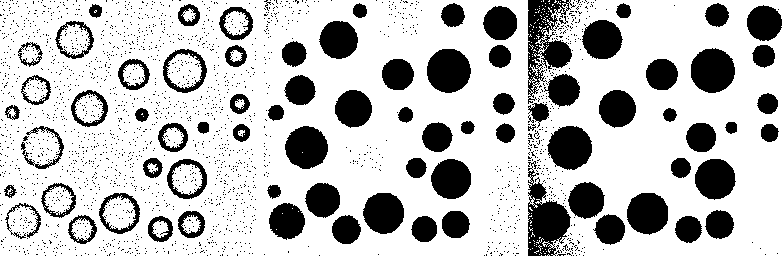
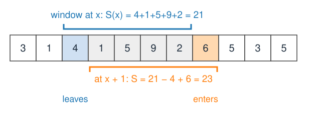
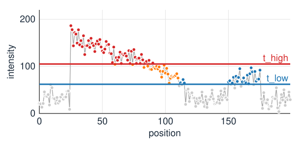
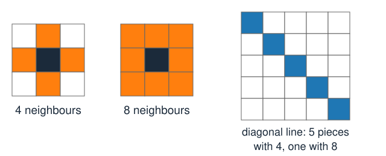

The last two units chose one threshold for the whole image from its histogram. That fails as soon as the image is not two clean classes.
When a global threshold cannot work: uneven illumination, few small objects, faint objects, noise.
Remedy 1: correct the background, then threshold globally.
Remedy 2: local thresholdsT(x) from a window: mean − C, Niblack, Sauvola; the window size.
Remedy 3: hysteresis: two thresholds, and connectivity to sure seeds.
When noise is the problem: let neighbours agree (graph cuts, MRFs).
Slides titled The math give the formulas and proofs; the ideas are complete without them.
When a global threshold fails

Left: dark discs, lit by a light that is dim on the left and bright on the right (plus a darker rim, vignetting). Middle: the best global threshold (Otsu); object in black. Right: a local threshold (Sauvola).
Uneven illumination: the background on the left (about 79) is darker than the objects on the right (about 90). No single t can be above every object and below every background pixel.
Unimodal histogram: a few small objects make no peak of their own.
Small or faint objects: blur mixes them with the background (partial volume).
Noise: single pixels cross any threshold; no rule on single pixels fixes that.
The threshold must follow the background

One row of the image (grey), the global threshold (red, dashed) and a local threshold T(x) (orange).
The background level changes along the row; the objects are dips relative to it.
A global threshold is below the background on the right but above it on the left: it calls the whole left side object.
A threshold that follows the local background separates every dip from its own surroundings.
Remedy 1: correct the background
Estimate the smooth background B(x), remove it, then threshold the corrected image globally.
B(x): a heavily blurred copy of the image (blur much larger than the objects), or a plane or quadratic surface fitted by least squares to the background pixels.
Illumination multiplies the image: divide, I(x)/B(x). An additive offset (glow, stray light): subtract, I(x) - B(x).
In the test image: objects are about 0.5 \times their background on both sides (39/79, 90/202). After dividing, one threshold (e.g. 0.75) works everywhere.
The top-hat of the morphology day (day 8) estimates the background without being pulled by the objects. A flat-field image (the same optics without a sample) measures the illumination directly.

Top: image, blurred background B. Bottom: I/B, and one threshold on it (0.85 \times background): 648 of 65 536 pixels wrong.
The math: dividing or subtracting
Model: I(x) = L(x)\,R(x) + O(x) + n(x), with illumination L, the true reflectance or stain R, an additive offset O and noise n.
Multiplicative illumination (O = 0): I/L = R + n/L. Dividing makes the object contrast the same everywhere, but amplifies the noise where L is small (dark corners).
Additive offset (L constant): I - O = LR + n.
A fitted plane B(x, y) = a + bx + cy: least squares over background pixels, \min_{a,b,c} \sum_j (I_j - a - bx_j - cy_j)^2, solved by the normal equations A^\top A\,\boldsymbol\beta = A^\top \mathbf I with rows (1, x_j, y_j).
A blur as estimate: B = G_s * I contains the objects too; with dark objects covering a fraction f of the window, B is pulled down by about f times the object contrast.
Remedy 2: a threshold for every pixel
Compute the threshold from a windowW around each pixel: T(x) depends on what is near x.
mean − C: T(x) = m_W(x) - C, the local mean minus a margin. A pixel is object if it is clearly darker than its surroundings.
The local mean m_W is a box filter (the filtering unit, day 1): a moving average over the window.
In flat background m_W \approx the background, so T follows the illumination by construction.
The margin C must exceed the noise (or background speckle becomes object) and be smaller than the object contrast everywhere, including the dim side.
By hand: profile 100, 110, 80, 130, 140, 150, 160, 130, 180, 190 on a rising background, window 3, C = 10: object at positions 3 and 8 only. A global t = 125 takes positions 1–3 instead.

Niblack and Sauvola: adapt to the contrast
Use the local standard deviations_W too: it is small in flat regions and large where there is an edge.
Niblack (1986): T = m + k\,s with k \approx -0.2. Near an object, T drops a little below the mean. In empty background, s is just the noise, and T is barely below the mean: 42 % of the background pixels fall below it. Speckle everywhere.
Sauvola (2000): T = m\,\big(1 + k(s/R - 1)\big), R = 128, k \approx 0.2–0.5. In flat regions (s \ll R), T \approx m(1 - k): well below the mean, so background stays background. Near objects s is large and T rises towards m.
Both scale with the window statistics; Sauvola’s T \propto m also scales with multiplicative illumination.
(Published for dark text on white paper. For bright objects, apply them to the inverted image.)

Niblack (left): 3180 false pixels in the background. Sauvola (right): 12.
The math: Niblack and Sauvola in numbers
Flat background with mean \mu_b and Gaussian noise \sigma_n: m \approx \mu_b, s \approx \sigma_n.
Niblack: object if I < \mu_b + k\sigma_n, i.e. \frac{I - \mu_b}{\sigma_n} < k: probability \Phi(k) = \Phi(-0.2) = 0.42, independent of the noise level.
Sauvola, \mu_b = 200, \sigma_n = 6, k = 0.3: T = 200\,(1 + 0.3(6/128 - 1)) = 142.8, more than 9 noise standard deviations below the background: no false pixels.
At an object edge, m = 150, s = 50: T = 150\,(1 + 0.3(50/128 - 1)) = 122.6; an object at 90 is below, the background at 200 above.
With R = 128 (the largest standard deviation of 8-bit data), s/R \le 1 and T \le m.
The window size
The real parameter of every local method.
Larger than the objects: if the window fits inside an object, the local mean is the object, and the object’s centre is no darker than its surroundings: discs come out hollow (only a rim).
Smaller than the illumination change: a window as large as the image is a global threshold again.
Rule of thumb: about twice the largest object diameter. In the test image (discs up to 45 pixels across, light changing over 256 pixels): 11 \times 11 hollows the discs, 51 \times 51 to 81 \times 81 work, 241 \times 241 is nearly global.
The same trade-off returns for the size of the structuring element of a top-hat (day 8).

Mean − C with windows 11 \times 11 (hollow discs), 51 \times 51 (good), 241 \times 241 (the dim left edge turns object).
Local mean and variance are box filters
m_W = \text{box}(I) and s_W^2 = \text{box}(I^2) - \text{box}(I)^2: two box filters and a subtraction.
A box filter with running sums costs the same for any window size: add the pixel that enters, subtract the one that leaves. Two 1D passes for 2D.
The integral image gives any rectangle sum from four lookups; it is taught on the integral-images elective.
So local thresholds cost O(N) for an image of N pixels, however large the window.

The math: variance from two box filters
For the n pixels I_1, \dots, I_n in the window: s^2 = \frac1n\sum_j (I_j - m)^2 = \frac1n\sum_j I_j^2 - 2m\,\frac1n\sum_j I_j + m^2 = \text{box}(I^2) - m^2 .
Numerically fragile when s \ll m (two large, nearly equal numbers are subtracted): use doubles, or subtract a rough offset first.
Running sum along a row, window 2r + 1: S(x + 1) = S(x) + I(x + r + 1) - I(x - r). Two passes (rows, then columns) give the 2D box sum.
Try it: local thresholds
Remedy 3: hysteresis

Two thresholds t_\text{low} < t_\text{high} (the edges day used this inside Canny, on edge strength):
Pixels above t_\text{high} are sure: seeds (red).
Pixels above t_\text{low} are kept only if they are connected to a seed (orange); the others are rejected (blue).
The fading structure survives to its faint end; isolated noise above t_\text{low} does not. But the faint separate bump on the right has no seed: it is lost.
Hysteresis on a grid
Connected = linked by a chain of neighbouring pixels that are all above t_\text{low}.
4-connectivity: neighbours share a side. 8-connectivity: corners count too. A one-pixel-wide diagonal line is connected only with 8.
Foreground with 8-connectivity is the convention of the following days.
The result is a connected-components question: keep every component of the low mask that contains a seed. How that is computed (reconstruction, labelling) is on days 8 and 9.
Good for thin, faint, continuous structures: vessels, filaments, edges. Useless for separate faint objects without a bright spot.

Try it: hysteresis
When noise is the problem: let neighbours agree
Every method so far decides each pixel by its own grey level (and a threshold that may vary). Isolated wrong pixels survive.
Smoothing first helps, but blurs edges.
The principled fix: an energy with a data term (how well the grey level fits each class: this unit’s Bayes model) plus a smoothness term that charges for neighbours with different labels.
Graph cuts (day 13) minimise it exactly; thresholding is the special case with no smoothness term (\lambda = 0). The Ising/MRF elective gives the probabilistic view.
Summary
One global threshold fails under uneven illumination, for few small or faint objects, and with noise.
Correct the background first: divide by (or subtract) a smooth estimate, then threshold globally.
Local thresholdsT(x) from a window: mean − C, Niblackm + ks (speckle in empty background), Sauvolam(1 + k(s/R - 1)) (background stays background).
The window must be larger than the objects and smaller than the illumination changes. Local mean and variance are box filters: O(N) for any window.
Hysteresis: seeds above t_\text{high}, keep what is connected above t_\text{low} (4- or 8-connectivity).